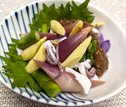

ヤングコーンとミョウガのぬた
- 調理時間：30分
- （一人当たり）
- カロリー：148kcal
- たんぱく質：20.3g
- 脂質：1.6g
- 炭水化物：13.1g
- 塩分：1.4g


＜2人分＞
※酢みそは作りやすい分量です。和える量はお好みで調整してください。
- ヤリイカ
- 1杯
- ヤングコーン
- 2本
- ミョウガ
- 2個
- アスパラガス
- 1本
- 大葉（飾り用）
- 適宜
- ・味噌
- 80g
- ・砂糖
- 70g
- ・酢
- 大さじ2
- ・粉辛子
- 小さじ1/2
A


- ヤリイカは頭と胴を離し、軟骨とハラワタを取り除く。
目の部分も切り落とし、エンペラも外す。
それぞれの部位を食べやすい大きさに切って下茹でする。 - ヤングコーンは皮をむき、ひげ根を取り除き、根元を切り落とす。
ミョウガは縦に4等分に切る。
アスパラは根元を切り落とし、根元から3㎝程度の部分をピーラーで筋をとる。 - 鍋に湯を沸かし、塩（分量外）をいれる。
②の野菜を各々、茹でる。
ザルにあげて直ぐ冷ます。
ヤングコーンとアスパラガスは食べやすい大きさに切る。 - ボウルにAの調味料をよく混ぜ合わせておく。
- 別のボウルに③と下茹でしたヤリイカをいれて④のタレで和える。
ヤングコーンとミョウガのぬた
ヤングコーンは、実が大きくなる前に若採りしたトウモロコシのことです。通常、トウモロコシは１本の株から２本の実を収穫しますが、成長段階でできる３本目以上の間引かれたものがヤングコーンとして流通しています。ですから、ヤングコーンもスイートコーンも同じ種類ということです。スイートコーンは芯を残して粒を食べますが、ヤングコーンは芯まで食べられることが特徴です。トウモロコシほどの甘みはありませんが、シャキシャキとした食感と風味が楽しめます。